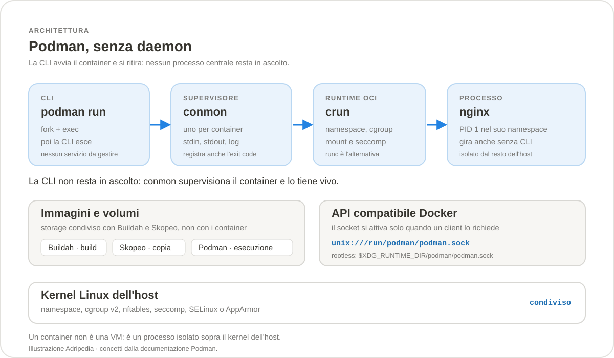
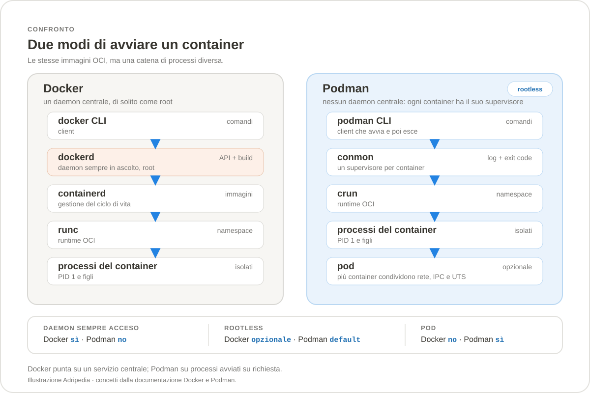

Sezione · Informatica
Podman
Podman è un motore per container che non ha bisogno di un daemon: avvia i processi su richiesta, gira senza privilegi di root per impostazione predefinita e sa gestire anche i pod. La guida copre installazione, comandi, configurazione e le differenze reali rispetto a Docker, senza dare per scontato che siano la stessa cosa.
6.1.4
(12 ottobre 2026) e Podman Desktop 1.30.5 (13 ottobre
2026). Podman è un progetto CNCF Sandbox dal
21 gennaio 2025, con licenza Apache 2.0; la release 6.2.0 è
disponibile come release candidate. Per il confronto completo con
l'altro motore resta disponibile la guida
Docker.
Che cos'è Podman
Podman è un container engine OCI per Linux:
crea, avvia e gestisce container e pod, oltre a immagini, volumi e
reti. La sua interfaccia a riga di comando è volutamente
simile a quella di Docker, quindi chi arriva da Docker ritrova
comandi come run, ps, pull,
build e compose. Le immagini sono le
stesse immagini OCI: non esiste un formato “Podman” da
scegliere.
La differenza strutturale è che Podman è
daemonless. Non c'è un dockerd
sempre acceso: ogni comando è un processo che parte, fa il
suo lavoro e termina. Il container resta in esecuzione perché
un piccolo supervisore, conmon, lo tiene agganciato e
ne raccoglie log e codice di uscita. In più, Podman usa i
namespace utente per funzionare da utente normale:
non serve essere root per avviare container.
Podman nasce nel progetto libpod ed è sviluppato insieme a Buildah e Skopeo. Non è un fork di Docker: è un'implementazione indipendente degli standard OCI, con un'attenzione particolare a Linux, a systemd e ai pod. Dal gennaio 2025 il pacchetto Podman Container Tools è un progetto CNCF Sandbox.

Perché “senza daemon”
In Docker il client parla con dockerd, un servizio
centrale che resta in ascolto, gestisce immagini, reti e container e
di solito gira come root. In Podman il client non delega a un
servizio: esegue direttamente le operazioni e affida la
supervisione del container a conmon. Quando il comando
finisce, la CLI può uscire mentre il container continua a
girare.
Questo cambia alcune cose nella pratica quotidiana:
- Nessun singolo punto di guasto per i container già avviati: se aggiorni o riavvii il motore non c'è un servizio centrale che li travolge.
- Meno processi inattivi: senza container non c'è un daemon che consuma memoria e resta in ascolto.
- Rootless come impostazione predefinita: un utente normale può creare e gestire i propri container, con i propri UID mappati.
- Integrazione naturale con systemd: un container è un processo, quindi si può gestire con un'unità systemd o con Quadlet.
- API e socket opzionali: chi ha bisogno dell'API Docker può attivare
podman.socket, ma non è obbligatorio.
“Senza daemon” non significa “senza processi di
servizio”: conmon e il runtime OCI restano vivi
per tutto il tempo in cui il container gira. Significa che non
esiste un gestore centrale sempre acceso a cui tutti i client si
collegano.
I concetti essenziali
Chi arriva da Docker conosce già quasi tutto il vocabolario. Le parole nuove, o usate in modo leggermente diverso, sono soprattutto pod e Quadlet.
| Concetto | Che cos'è | Comando tipico |
|---|---|---|
| Immagine | Archivio immutabile con file system e metadati, secondo lo standard OCI. Si scarica da un registry o si costruisce in locale. | podman pull docker.io/library/nginx:alpine |
| Container | Processo isolato avviato da un'immagine, con il proprio file system, rete, PID e limiti. | podman run -d --name web -p 8080:80 nginx:alpine |
| Pod | Gruppo di uno o più container che condividono rete, UTS e IPC. È l'unità che Kubernetes conosce. | podman pod create --name stack -p 8080:80 |
| Volume | Archivio persistente gestito da Podman, indipendente dal ciclo di vita del container. | podman volume create dati |
| Rete | Rete virtuale con driver bridge, macvlan o pasta; Podman 6 usa Netavark e aardvark-dns. | podman network create backend |
| Quadlet | Formato dichiarativo per trasformare file .container, .volume e simili in unità systemd. |
systemctl --user start web.service |
Pod, non solo container
Un pod è un gruppo di container che condividono lo stesso
namespace di rete, lo stesso hostname e lo stesso namespace IPC.
Possono parlarsi tramite localhost e condividere porte
e indirizzi. È lo stesso modello di Kubernetes, ma senza
scheduler, controller o più nodi: Podman gestisce il pod su
una singola macchina.
Podman crea un container infrastrutturale che tiene vivi i namespace
condivisi; gli altri container si aggiungono con
--pod. Un pod è utile quando due processi
devono stare sulla stessa rete — per esempio un'applicazione e
un sidecar — o quando vuoi esportare la configurazione come
YAML Kubernetes.
podman pod create --name web -p 8080:80
podman run -d --pod web --name nginx nginx:alpine
podman run -d --pod web --name log sidecar:latest
podman pod ps
podman kube generate web -o web.yamlIl pod non è un cluster Kubernetes: non distribuisce i carichi su più macchine, non riavvia da solo un container fallito (quello lo fa systemd o Quadlet) e non offre il controllo di un control plane. È però un ottimo ponte per provare un manifest o per eseguire un piccolo stack locale.
L'ecosistema
Podman non lavora da solo. La suite di strumenti condivide formati e storage delle immagini, e ogni pezzo ha un ruolo preciso.
| Strumento | Ruolo | Esempio |
|---|---|---|
| Podman | Esegue e gestisce container, pod, volumi e reti. | podman run, podman pod |
| Buildah | Costruisce immagini OCI, anche senza daemon e senza Containerfile completo. | buildah bud -t app . |
| Skopeo | Copia, ispeziona e sincronizza immagini tra registry e storage locale. | skopeo inspect docker://nginx:alpine |
| Podman Desktop | Interfaccia grafica per Podman, container, immagini, pod e Kubernetes locale. | Installazione separata, multipiattaforma |
| Quadlet | Genera unità systemd da file dichiarativi, senza scrivere a mano un servizio. | web.container → web.service |
| Compose | Wrapper verso docker-compose o podman-compose per i file Compose esistenti. |
podman compose up -d |
| kube play | Traduce YAML Kubernetes in pod e container locali. | podman kube play deployment.yaml |
Docker vs Podman
Podman e Docker condividono immagini, registry e gran parte della sintassi, ma non sono intercambiabili in ogni dettaglio. La tabella seguente riassume le differenze che contano davvero quando si sceglie uno dei due; non è una classifica e non esiste un vincitore assoluto.
| Aspetto | Docker | Podman |
|---|---|---|
| Architettura | Client → dockerd → containerd → runc. |
CLI → conmon → crun/runc, senza daemon centrale. |
| Processo sempre acceso | Sì, il daemon. | No; il socket API è opzionale. |
| Rootless | Supportato, ma da configurare; il daemon classico gira come root. | Predefinito per l'utente normale, tramite user namespace. |
| Immagini | OCI. | OCI, spesso le stesse immagini senza modifiche. |
| Build | docker build, con BuildKit integrato. |
podman build basato su Buildah. |
| Compose | docker compose incluso in Docker Desktop/CLI. |
podman compose è un wrapper: serve un provider esterno. |
| Pod | Non previsti come concetto nativo. | Nativi: più container con rete, IPC e UTS condivisi. |
| Orchestrazione | Docker Swarm (legacy) o Kubernetes. | Nessun orchestratore integrato; si usa Kubernetes o systemd. |
| API | API Docker e socket /var/run/docker.sock. |
API compatibile Docker v1.40 e API libpod; socket attivabile con podman.socket. |
| Interfaccia grafica | Docker Desktop, con licenza propria. | Podman Desktop, Apache 2.0, opzionale. |
| systemd | Integrazione manuale o tramite wrapper. | Quadlet è il metodo consigliato; generate systemd è deprecato. |
| Sicurezza predefinita | Capability più ampie; rootless opzionale. | Capability più ridotte, rootless e namespace utente. |
| Piattaforme | Linux, Windows 10/11, macOS Intel e Apple Silicon. | Linux, Windows 11, macOS Apple Silicon; Podman 6 ha rimosso Windows 10 e Intel Mac. |
| Licenza | Docker Engine Apache 2.0; Docker Desktop con licenza commerciale. | Apache 2.0, incluso Podman Desktop. |

La compatibilità è concreta ma non totale. Podman accetta molte opzioni di Docker, espone un'API compatibile e può leggere i file Compose. Non tutto però si comporta allo stesso modo: la gestione dei volumi, i permessi degli UID, il percorso del socket, il modo di far ripartire un container e l'assenza di un daemon sono differenze che emergono appena si esce dai comandi basilari. La sezione Migrazione da Docker raccoglie i punti da controllare.
Quando scegliere Podman
Podman è particolarmente adatto quando:
- lavori su un server Linux e vuoi container senza un daemon root sempre attivo;
- ti serve rootless per default, magari su una macchina condivisa o in un ambiente con vincoli di sicurezza;
- vuoi gestire i container con systemd, tramite Quadlet, e farli partire al boot;
- lavori con pod o vuoi passare rapidamente da un manifest Kubernetes a un test locale;
- usi già l'ecosistema Red Hat/Fedora, dove Podman è la scelta predefinita;
- vuoi evitare la licenza commerciale di Docker Desktop su Windows o macOS, accettando un'esperienza grafica diversa.
Docker resta più comodo quando ti serve un'esperienza “tutto incluso” su desktop, quando usi Docker Swarm o strumenti che si aspettano il socket Docker senza configurazione, quando lavori su Windows 10 o su un Mac Intel — piattaforme non supportate da Podman 6 — o quando il team ha già standardizzato build e Compose su Docker. In molti casi la scelta non è tecnica: conta ciò che conoscono le persone che devono mantenere l'ambiente.
Requisiti e versioni
| Ambiente | Requisiti | Note |
|---|---|---|
| Linux | Kernel con namespace e cgroup v2; passt per la rete rootless; nftables per Podman 6. |
Le distribuzioni più recenti includono tutto; su sistemi vecchi possono servire pacchetti aggiuntivi. |
| Windows | Windows 11, WSL 2.5.1 o successivo, virtualizzazione abilitata. | Hyper-V è un'alternativa solo su Pro, Enterprise ed Education. Podman 6 non supporta Windows 10. |
| macOS | Apple Silicon. | Podman 6 ha rimosso il supporto ai Mac Intel; il provider predefinito è applehv. |
| Podman Desktop | Windows 11, macOS Apple Silicon o Linux. | È un'interfaccia grafica separata: Podman funziona anche senza. |
Le versioni di riferimento di questa guida sono Podman 6.1.4 (12 ottobre 2026), Podman Desktop 1.30.5 (13 ottobre 2026) e, per il confronto, Docker 29.9.3. Podman 6.1.4 include Buildah 1.45.2 e la storage library 1.64.2. La release 6.2.0 è arrivata alla candidate 1 il 26 ottobre 2026: non è ancora una stabile e non va usata come riferimento di produzione.
Installare su Linux
Su Linux Podman si installa dai repository della distribuzione.
È il metodo più affidabile, perché porta con sé
anche le dipendenze giuste: runtime OCI, conmon,
Netavark, pasta e i file di configurazione comuni.
| Distribuzione | Comando | Note |
|---|---|---|
| Fedora, RHEL 10 | sudo dnf install podman |
Podman è il motore predefinito nell'ecosistema Red Hat. |
| Ubuntu 24.04 o successivo | sudo apt update && sudo apt install podman |
La versione del repository può essere più vecchia della 6.x: controlla con podman --version. |
| Debian 13 o successivo | sudo apt update && sudo apt install podman |
Su Debian più vecchie potrebbero mancare pacchetti o funzionalità. |
| Arch Linux | sudo pacman -S podman |
Il pacchetto segue rapidamente le release upstream. |
| openSUSE Tumbleweed / Leap | sudo zypper install podman |
Su Leap la versione dipende dalla release. |
| Alpine Linux | sudo apk add podman |
Verifica che il kernel e i moduli necessari siano disponibili. |
Per il funzionamento rootless servono anche gli strumenti per i subordinate UID/GID e un programma di rete per i namespace non privilegiati. I nomi dei pacchetti cambiano:
| Necessità | Fedora / RHEL | Debian / Ubuntu | Arch |
|---|---|---|---|
Mappatura UID/GID (newuidmap, newgidmap) |
shadow-utils |
uidmap |
shadow |
Rete rootless (pasta) |
passt |
passt |
passt |
| Configurazioni e policy comuni | containers-common |
containers-common |
containers-common |
La versione nei repository non è sempre l'ultima. Se ti serve una funzionalità introdotta in Podman 6, controlla la versione della distro prima di installare; non usare script di terze parti non verificati per “aggiornare” Podman su un sistema gestito dal package manager.
Configurare l'utente rootless
Podman rootless non ha bisogno di root per girare, ma ha bisogno che
il sistema assegni all'utente un intervallo di UID e GID
subordinati. Questi intervalli finiscono in /etc/subuid
e /etc/subgid, nel formato
utente:uid_iniziale:quantità. Senza di loro il
primo podman run fallisce con un errore di
clone.
grep "^$USER:" /etc/subuid /etc/subgid
sudo usermod --add-subuids 100000-165535 --add-subgids 100000-165535 "$USER"
podman system migrate
podman info --format '{{.Host.Security.Rootless}}'
podman unshare cat /proc/self/uid_map
L'output atteso del primo comando è una riga del tipo
alice:100000:65536 per entrambi i file. Se manca,
usermod la crea; dopo la modifica conviene uscire e
rientrare nella sessione. podman system migrate ferma i
container dell'utente e ricrea il processo di pausa con le nuove
mappature, quindi va eseguito quando non ci sono container da
preservare. Il comando podman unshare apre una shell
nel namespace utente e permette di vedere la mappatura effettiva.
Con rootless, lo storage vive nella home dell'utente:
$HOME/.local/share/containers/storage (oppure
$XDG_DATA_HOME/containers/storage), mentre i dati
temporanei stanno in $XDG_RUNTIME_DIR/containers. I
container avviati con sudo podman usano invece
/var/lib/containers/storage e non condividono immagini
e volumi con quelli rootless. Scegli un modo e resta coerente.
Se vuoi che i servizi utente — per esempio quelli creati con Quadlet — partano anche senza login, abilita il lingering:
loginctl enable-linger "$USER"
Per poter usare porte privilegiate (< 1024) da rootless, molte
distribuzioni moderne consentono di abbassare la soglia con
net.ipv4.ip_unprivileged_port_start. In alternativa si
pubblica una porta alta e si mette un proxy davanti. Evita di
alzare privilegi o di usare --privileged solo per
aggirare questo limite.
Installare su Windows 11
Podman su Windows non esegue container Windows: installa un client
nativo e una macchina Linux leggera, gestita con
podman machine. La macchina è basata su WSL 2
oppure su Hyper-V e ospita il motore Podman vero e proprio. Servono
Windows 11, la virtualizzazione abilitata e WSL 2.5.1 o successivo.
Il pacchetto si scarica dalla pagina delle release oppure con
winget. L'installer MSI supporta due ambiti:
- utente (predefinito): nessun privilegio di amministratore, file in
%LOCALAPPDATA%\Programs\Podman; - macchina: richiede privilegi di amministratore, file in
%PROGRAMFILES%\Podman, PATH per tutti gli utenti.
wsl --version
wsl --update
winget install RedHat.Podman
podman machine init
podman machine start
podman run --rm quay.io/podman/hello
Se WSL non è installato, esegui wsl --install da
un PowerShell amministratore e riavvia. L'installer di Podman non
installa più WSL automaticamente. Dopo l'installazione apri un
terminale nuovo, in modo che il PATH aggiornato sia visibile.
Il provider predefinito è wsl. L'alternativa
hyperv è disponibile solo su Windows Pro,
Enterprise ed Education e richiede l'iscrizione al gruppo Hyper-V
Administrators; un amministratore può preparare l'ambiente
una volta con podman system hyperv-prep. I due provider
non possono avere macchine in esecuzione contemporaneamente.
podman machine init --provider wsl
podman machine init --provider hyperv
podman machine init --now
podman machine init --now --cpus 4 --memory 8192 --disk-size 40
I valori predefiniti di una nuova macchina sono
1 CPU, 2048 MB di RAM e
10 GB di disco; il nome predefinito è
podman-machine-default. Per modificare una macchina
già creata, fermala e usa podman machine set:
podman machine stop
podman machine set --cpus 4 --memory 8192 --disk-size 40
podman machine start
podman machine list
podman machine ssh
podman machine stop
La macchina WSL usa un'immagine Fedora personalizzata, mentre il
provider Hyper-V usa Fedora CoreOS. Podman 6.1.0 ha introdotto
force_port_listen, impostato automaticamente sulle
nuove macchine WSL per il port forwarding dal sistema Windows;
Podman 6.1.4 corregge inoltre l'esecuzione sotto WSL 3.
Per un'interfaccia grafica puoi installare Podman Desktop:
winget install RedHat.Podman-DesktopPodman Desktop è opzionale: mostra container, immagini, pod, volumi e un Kubernetes locale, e può gestire la macchina Podman. Non è necessario per usare la CLI.
Installare su macOS
Podman 6 supporta solo Mac con Apple Silicon. Su un Mac Intel puoi usare Podman 5.x oppure un'altra soluzione. Con Homebrew:
brew install podman
podman machine init
podman machine start
podman run --rm quay.io/podman/hello
Il provider predefinito su Apple Silicon è
applehv, basato sull'hypervisor di Apple. È
disponibile anche libkrun, utile quando serve la
condivisione della GPU con la macchina. Anche qui valgono i valori
predefiniti di 1 CPU, 2048 MB e 10 GB, modificabili con
podman machine set dopo aver fermato la macchina.
Podman Desktop per macOS è distribuito come DMG.
Verificare che tutto funzioni
podman --version
# podman version 6.1.4
podman info --format '{{.Host.Security.Rootless}}'
# true
podman run --rm quay.io/podman/hello
L'ultimo comando scarica una piccola immagine e stampa un messaggio
di benvenuto, di solito Podman is awesome!. Se arriva
fino in fondo, il motore, lo storage e la rete funzionano. Su
Windows e macOS controlla anche che la macchina sia in esecuzione:
podman machine list
podman machine inspect podman-machine-default
podman info è il comando da guardare quando
qualcosa non torna: mostra versione, runtime OCI, backend di rete,
storage, driver e mappature UID/GID.
Aggiornare Podman
| Ambiente | Comando | Note |
|---|---|---|
| Fedora / RHEL | sudo dnf upgrade podman |
Riavvia i container gestiti da systemd dopo l'aggiornamento. |
| Debian / Ubuntu | sudo apt update && sudo apt upgrade podman |
Controlla la versione disponibile prima di un salto di major. |
| Arch | sudo pacman -Syu podman |
Un aggiornamento parziale del sistema non è supportato. |
| macOS | brew upgrade podman |
Aggiorna anche Podman Desktop separatamente. |
| Windows | winget upgrade RedHat.Podman |
In alternativa scarica il nuovo MSI dalla pagina delle release. |
| Podman Desktop | winget upgrade RedHat.Podman-Desktop |
Su macOS e Linux usa l'aggiornamento integrato o il pacchetto della distro. |
Dopo un aggiornamento di major è prudente fermare i container,
eseguire podman system migrate e riavviare i servizi.
Su Windows e macOS, se la macchina è stata creata con una
versione precedente, controlla le note della release: alcune
modifiche al formato della VM possono richiedere di ricrearla.
Disinstallare
Su Linux rimuovi il pacchetto con il package manager della distro. I dati non vengono cancellati automaticamente: se vuoi ripartire da zero, rimuovi anche le directory di storage e configurazione.
sudo dnf remove podman
sudo apt remove podman
sudo pacman -Rns podman
rm -rf "$HOME/.local/share/containers"
rm -rf "$HOME/.config/containers"
rm -rf "$XDG_RUNTIME_DIR/containers"rm -rf sulle directory di
storage elimina immagini, container e volumi locali. Controlla il
percorso e fai un backup dei volumi che ti servono.
Su Windows disinstalla Podman dal pannello App e funzionalità. L'uninstaller non rimuove macchine e configurazioni: elimina prima la macchina e poi le cartelle dati.
podman machine rm podman-machine-default
# poi, se non servono più
Remove-Item -Recurse "$env:USERPROFILE\.local\share\containers\podman\machine"
Remove-Item -Recurse "$env:APPDATA\containers"
Su macOS, dopo brew uninstall podman, rimuovi la
macchina con podman machine rm e, se vuoi, le stesse
directory ~/.local/share/containers e
~/.config/containers.
Problemi comuni
| Sintomo | Causa probabile | Soluzione |
|---|---|---|
cannot clone: Operation not permitted |
Mancano o non sono validi gli intervalli in /etc/subuid e /etc/subgid. |
Configura i subordinate UID/GID, poi esegui podman system migrate. |
pasta: command not found o errori di rete rootless |
Il pacchetto passt non è installato. |
Installa passt con il package manager della distro. |
newuidmap: command not found |
Mancano gli helper del pacchetto uidmap / shadow-utils. |
Installa il pacchetto e verifica i permessi dei binari. |
permission denied su un bind mount |
L'UID dell'utente non corrisponde a quello del processo nel container, oppure SELinux blocca il mount. | Usa --userns=keep-id, aggiungi :Z al volume, controlla i permessi della directory. |
address already in use |
La porta è già occupata da un altro processo o container. | Cambia la porta pubblicata o ferma il processo che la usa. |
Cannot connect to Podman socket |
Il socket non è attivo o la macchina non è in esecuzione. | systemctl --user enable --now podman.socket oppure podman machine start. |
| Podman non parte su Windows | WSL troppo vecchio, virtualizzazione disattivata o macchina in stato inconsistente. | Aggiorna WSL a 2.5.1+, verifica la virtualizzazione, prova wsl --shutdown e ricrea la macchina. |
| Errore su cgroup v1 | Podman 6 richiede cgroup v2. | Abilita cgroup v2 nel bootloader o usa un sistema operativo più recente. |
Errore su iptables o CNI |
Podman 6 usa nftables e Netavark, non iptables e CNI. | Rimuovi configurazioni legacy e installa nftables e Netavark. |
| Podman chiede quale registry usare per un nome breve | Il nome dell'immagine non è completo e registries.conf non ha un default. |
Usa un riferimento completo come docker.io/library/nginx:alpine o configura unqualified-search-registries. |
Digita per filtrare le tabelle e i comandi qui sotto.
Aiuto, versioni e informazioni
Prima di cercare il comando giusto, vale la pena sapere dove
guardare. podman --help elenca i sottocomandi;
podman <comando> --help mostra le opzioni di quel
comando; podman info fotografa l'ambiente.
| Comando | Cosa fa | Note |
|---|---|---|
podman --version | Versione del client | Utile per capire quale serie stai usando. |
podman version --format json | Versioni di client, server e API | Con una macchina o un servizio remoto mostra anche il server. |
podman info | Informazioni su host, storage, rete e sicurezza | Il primo comando da eseguire quando qualcosa non funziona. |
podman info --format '{{.Host.Security.Rootless}}' | Indica se stai girando rootless | Restituisce true o false. |
podman --help | Elenco dei comandi | Include anche i comandi meno usati. |
podman run --help | Opzioni di run | Sostituisci run con il comando che ti interessa. |
podman system connection list | Connessioni remote configurate | Utile su Windows/macOS e verso server via SSH. |
Immagini
| Comando | Cosa fa | Note |
|---|---|---|
podman pull docker.io/library/nginx:alpine | Scarica un'immagine | Il riferimento completo evita ambiguità sui nomi brevi. |
podman images | Elenca le immagini locali | Alias: podman image ls. |
podman search nginx | Cerca immagini nei registry configurati | Il comportamento dipende da registries.conf. |
podman inspect nginx:alpine | Metadati completi dell'immagine | Con --format estrai un solo campo. |
podman history nginx:alpine | Mostra i layer e i comandi che li hanno creati | Utile per capire da dove arriva un'immagine. |
podman tag nginx:alpine locale/nginx:test | Aggiunge un tag | Non crea una copia dei layer. |
podman push locale/nginx:test | Pubblica un'immagine su un registry | Serve podman login se il registry è privato. |
podman rmi nginx:alpine | Rimuove un'immagine | Non funziona se un container la sta usando. |
podman image prune | Rimuove le immagini non usate | -a include quelle senza container. |
podman save -o nginx.tar nginx:alpine | Esporta un'immagine in archivio | Per spostarla su un host senza registry. |
podman load -i nginx.tar | Importa un archivio | Compatibile con il formato Docker. |
podman manifest create app:multi | Crea una manifest list | Per immagini multi-architettura. |
podman pull docker.io/library/nginx:alpine
podman images --format "table {{.Repository}}:{{.Tag}}\t{{.Size}}"
podman inspect nginx:alpine --format '{{.Architecture}}/{{.Os}}'
podman rmi nginx:alpineContainer
Il ciclo di vita è lo stesso di Docker: creare, avviare,
fermare, ispezionare e rimuovere. La differenza è che non
c'è un daemon a ricordarsi di tutto: lo stato vive nello
storage locale e in conmon.
| Comando | Cosa fa | Note |
|---|---|---|
podman run -d --name web -p 8080:80 nginx:alpine | Avvia un container in background | -d stacca il terminale. |
podman run --rm -it alpine sh | Avvia una shell interattiva usa e getta | --rm elimina il container all'uscita. |
podman ps | Container in esecuzione | -a include quelli fermati. |
podman start web | Avvia un container esistente | Diverso da run, che ne crea uno nuovo. |
podman stop web | Ferma un container | -t imposta i secondi di attesa. |
podman restart web | Riavvia un container | Mantiene lo stesso file system. |
podman rm web | Rimuove un container fermo | -f forza anche se è in esecuzione. |
podman exec -it web sh | Apre una shell nel container | Richiede che il container sia in esecuzione. |
podman logs -f web | Segue i log | --tail 100 limita le righe iniziali. |
podman inspect web | Configurazione e stato completi | Con --format estrai un campo. |
podman stats | CPU, memoria e rete in tempo reale | Come top, ma per i container. |
podman top web | Processi del container | Mostra PID host, utente e comando. |
podman port web | Mappatura delle porte | Utile quando non ricordi cosa hai pubblicato. |
podman cp web:/etc/nginx/nginx.conf ./nginx.conf | Copia file da o verso il container | Anche nella forma inversa ./file web:/path. |
podman pause web | Sospende i processi | Si riprende con podman unpause web. |
podman wait web | Attende la fine e stampa l'exit code | Utile negli script. |
podman update --memory 512m web | Aggiorna i limiti a runtime | Non tutte le risorse sono modificabili. |
podman commit web locale/web:snapshot | Crea un'immagine dallo stato del container | Da usare con cautela: congela anche file temporanei. |
podman run -d --name web -p 8080:80 nginx:alpine
podman ps
podman logs -f web
podman exec -it web sh -c 'nginx -v'
podman stop web
podman rm webPod
I pod sono la differenza più visibile rispetto a Docker. Un
pod raggruppa container che condividono rete, UTS e IPC; i container
si aggiungono con --pod. Podman crea un container
infrastrutturale per tenere vivi i namespace.
| Comando | Cosa fa | Note |
|---|---|---|
podman pod create --name stack -p 8080:80 | Crea un pod con una porta pubblicata | La porta si pubblica sul pod, non sul singolo container. |
podman pod ps | Elenca i pod | -a include quelli fermati. |
podman pod inspect stack | Dettagli e container del pod | Mostra anche i namespace condivisi. |
podman run -d --pod stack --name app app:latest | Aggiunge un container al pod | Il container usa la rete del pod. |
podman pod start stack | Avvia tutti i container del pod | Anche stop, restart, rm. |
podman pod top stack | Processi del pod | Utile per vedere l'infrastruttura. |
podman pod stats stack | Metriche del pod | Aggrega i container. |
podman kube generate stack -o stack.yaml | Esporta il pod come YAML Kubernetes | Alias storico: podman generate kube, deprecato. |
podman kube play stack.yaml | Crea pod e container da YAML | Supporta anche Deployment, PVC, ConfigMap, Secret, DaemonSet e Job. |
podman kube down stack.yaml | Rimuove ciò che il file ha creato | Usa lo stesso YAML del play. |
podman pod create --name web -p 8080:80
podman run -d --pod web --name nginx nginx:alpine
podman pod ps
podman kube generate web -o web.yaml
podman kube play --replace web.yaml
podman kube down web.yamlVolumi
| Comando | Cosa fa | Note |
|---|---|---|
podman volume create dati | Crea un volume nominato | Il nome è stabile, il contenuto resta. |
podman volume ls | Elenca i volumi | Alias: podman volume list. |
podman volume inspect dati | Percorso e metadati | Mostra il mountpoint sul host. |
podman run -d -v dati:/usr/share/nginx/html:Z nginx:alpine | Monta un volume | :Z applica il label SELinux corretto. |
podman run --mount type=bind,src=$PWD,dst=/app,ro app | Bind mount in sola lettura | Forma esplicita, comoda negli script. |
podman volume rm dati | Rimuove un volume | Fallisce se è in uso. |
podman volume prune | Rimuove i volumi anonimi non usati | In Podman 6 --all include anche i nominati. |
podman volume export dati -o dati.tar | Esporta il contenuto | Utile per backup e migrazioni. |
podman volume import dati dati.tar | Importa un archivio | Il volume deve esistere. |
podman volume create dati
podman run -d --name web -v dati:/usr/share/nginx/html:Z -p 8080:80 nginx:alpine
podman volume inspect dati
podman volume export dati -o dati.tarReti
| Comando | Cosa fa | Note |
|---|---|---|
podman network ls | Elenca le reti | La rete podman è quella predefinita rootful. |
podman network create backend | Crea una rete bridge | Podman sceglie una subnet libera dal pool configurato. |
podman network inspect backend | Subnet, gateway e container collegati | Utile per capire gli indirizzi. |
podman run -d --network backend --name db postgres:17 | Collega un container a una rete | I container sulla stessa rete si risolvono per nome. |
podman run --network backend --ip 10.89.0.10 app | Assegna un IP statico | L'IP deve essere nella subnet della rete. |
podman run -p 127.0.0.1:8080:80 nginx | Pubblica una porta solo su localhost | Meno esposta rispetto a 0.0.0.0. |
podman network connect backend web | Collega un container esistente | Anche disconnect. |
podman network rm backend | Rimuove una rete | Podman 6.1 aggiunge --ignore. |
podman network prune | Rimuove le reti non usate | Controlla prima con ls. |
podman network create backend
podman run -d --network backend --name db postgres:17
podman run -d --network backend --name api -p 8080:8080 app:latest
podman network inspect backendBuild
podman build usa Buildah e accetta un Containerfile o
un Dockerfile. Non serve un daemon di build: la build è un
processo locale, e può girare rootless.
| Comando | Cosa fa | Note |
|---|---|---|
podman build -t app:1.0 . | Costruisce un'immagine | Cerca Containerfile o Dockerfile nella directory. |
podman build -f Containerfile.prod -t app:prod . | Usa un file specifico | Il contesto resta la directory indicata. |
podman build --no-cache -t app:clean . | Ignora la cache dei layer | Utile per verificare una build da zero. |
podman build --build-arg VERSION=1.2 -t app . | Passa un argomento | Deve essere dichiarato con ARG. |
podman build --platform linux/amd64,linux/arm64 -t app:multi . | Build multi-architettura | Richiede emulazione o build su piattaforme native. |
podman build --layers -t app . | Abilita la cache tra build | Comportamento predefinito nelle versioni recenti. |
podman build --squash -t app:flat . | Unisce i layer | Riduce i layer ma perde la cronologia. |
podman push app:1.0 quay.io/utente/app:1.0 | Pubblica l'immagine | Serve autenticazione. |
FROM docker.io/library/node:24-alpine AS build
WORKDIR /app
COPY package*.json ./
RUN npm ci
COPY . .
RUN npm run build
FROM docker.io/library/nginx:alpine
COPY --from=build /app/dist /usr/share/nginx/html
EXPOSE 80podman build -t web:1.0 .
podman run --rm -p 8080:80 web:1.0
podman tag web:1.0 quay.io/utente/web:1.0
podman push quay.io/utente/web:1.0Compose
podman compose non è un'implementazione interna:
è un wrapper che chiama docker-compose o
podman-compose e li fa parlare con il socket Podman.
Se docker-compose è installato, ha la precedenza.
| Comando | Cosa fa | Note |
|---|---|---|
podman compose up -d | Avvia lo stack | Legge compose.yaml o docker-compose.yml. |
podman compose ps | Stato dei servizi | Passa il comando al provider esterno. |
podman compose logs -f web | Segue i log di un servizio | Come con Docker Compose. |
podman compose exec web sh | Esegue un comando nel servizio | Il container deve essere attivo. |
podman compose down -v | Ferma e rimuove lo stack | -v elimina anche i volumi dichiarati. |
podman compose config | Mostra la configurazione risolta | Utile per verificare variabili e path. |
podman compose --help | Opzioni del provider | Dipende da quale provider è installato. |
podman compose up -d
podman compose ps
podman compose logs -f
podman compose down -v
Se il comando non trova un provider, installa
docker-compose o podman-compose, oppure
imposta compose_providers in
containers.conf. La variabile
PODMAN_COMPOSE_PROVIDER permette di sceglierlo per una
singola esecuzione.
Systemd e Quadlet
podman generate systemd è deprecato ma non
rimosso; il metodo consigliato è Quadlet,
che genera unità systemd da file dichiarativi. Un file
web.container produce un servizio
web.service.
| Comando | Cosa fa | Note |
|---|---|---|
systemctl --user daemon-reload | Rilegge i Quadlet dell'utente | Necessario dopo aver creato o modificato un file. |
systemctl --user start web.service | Avvia il servizio generato | Il nome deriva dal file web.container. |
systemctl --user enable --now web.service | Abilita e avvia subito | Per l'avvio automatico al login o al boot con lingering. |
systemctl --user status web.service | Stato e log recenti | Utile per capire perché non parte. |
systemd-analyze --user verify web.service | Verifica l'unità generata | Controlla sintassi e dipendenze. |
loginctl enable-linger "$USER" | Mantiene i servizi utente attivi senza login | Necessario per l'avvio al boot. |
podman generate systemd --new --name web | Genera un'unità systemd | Deprecato: preferisci Quadlet. |
podman auto-update | Aggiorna i container con policy di auto-update | Funziona per container gestiti da systemd. |
mkdir -p "$HOME/.config/containers/systemd"
# crea web.container nella directory appena indicata
systemctl --user daemon-reload
systemctl --user enable --now web.service
systemctl --user status web.serviceSecret e healthcheck
| Comando | Cosa fa | Note |
|---|---|---|
podman secret create db_password ./password.txt | Crea un secret da file | Il contenuto non finisce nell'immagine. |
printf 's3cr3t' | podman secret create db_password - | Crea un secret da stdin | Evita di lasciare il valore nella history. |
podman secret ls | Elenca i secret | Non mostra il contenuto. |
podman secret inspect db_password | Metadati del secret | Per il contenuto serve il driver. |
podman run --secret db_password,type=mount app | Monta il secret nel container | Di solito in /run/secrets/. |
podman secret rm db_password | Rimuove il secret | Non aggiorna i container già creati. |
podman healthcheck run web | Esegue il controllo di salute | Richiede un healthcheck definito. |
podman run --health-cmd 'curl -f http://localhost/ || exit 1' nginx | Definisce un healthcheck | Lo stato appare in podman ps. |
printf 's3cr3t' | podman secret create db_password -
podman run -d --name db --secret db_password postgres:17
podman secret ls
podman healthcheck run dbKubernetes YAML
podman kube play ricrea pod, container e volumi da un
file Kubernetes. I tipi supportati sono Pod, Deployment,
PersistentVolumeClaim, ConfigMap, Secret, DaemonSet e Job. Non
è un cluster: è un modo per eseguire un manifest su una
singola macchina.
| Comando | Cosa fa | Note |
|---|---|---|
podman kube play app.yaml | Crea risorse dal manifest | La restart policy predefinita è always. |
podman kube play --replace app.yaml | Ricrea le risorse esistenti | Elimina e ricrea i pod creati dal file. |
podman kube play --down app.yaml | Rimuove ciò che il manifest ha creato | Alias: podman kube down app.yaml. |
podman kube generate web -o web.yaml | Esporta un pod come YAML | Il file può essere riusato con kube play. |
podman kube generate --service web | Genera anche un Service | Utile per esporre il pod. |
podman kube play https://example.com/app.yaml | Legge il manifest da URL | Accetta anche - per stdin. |
podman kube generate web -o web.yaml
podman kube play --replace web.yaml
podman kube down web.yamlPodman machine
Su Windows e macOS i comandi podman machine gestiscono
la VM Linux che ospita il motore. Su Linux esistono ma servono solo
se vuoi una macchina separata; nella maggior parte dei casi non
vengono usati.
| Comando | Cosa fa | Note |
|---|---|---|
podman machine init | Crea la macchina predefinita | Nome: podman-machine-default. |
podman machine init --now | Crea e avvia subito | Comodo al primo setup. |
podman machine start | Avvia la macchina | Su Windows richiede WSL o Hyper-V funzionanti. |
podman machine stop | Ferma la macchina | I container si fermano con lei. |
podman machine restart | Riavvia la macchina | Introdotto in Podman 6.1. |
podman machine list | Elenca le macchine | Mostra stato e provider. |
podman machine inspect podman-machine-default | Dettagli della macchina | CPU, memoria, disco e provider. |
podman machine set --cpus 4 --memory 8192 | Modifica le risorse | La macchina deve essere ferma. |
podman machine ssh | Apre una shell nella VM | Utile per modificare i file di configurazione interni. |
podman machine rm | Elimina la macchina | Elimina anche i dati al suo interno: fai attenzione. |
podman machine os update | Aggiorna il sistema della VM | Non supportato con il provider wsl. |
podman system hyperv-prep | Prepara l'host Hyper-V | Da eseguire una volta come amministratore. |
Sistema, eventi e pulizia
| Comando | Cosa fa | Note |
|---|---|---|
podman system df | Spazio usato da immagini, container e volumi | Mostra anche lo spazio recuperabile. |
podman system prune | Rimuove container, reti e immagini non usati | Leggi bene l'anteprima prima di confermare. |
podman system prune -a --volumes | Pulizia più aggressiva | Include immagini e volumi non usati. |
podman system reset | Riporta Podman allo stato iniziale | Elimina immagini, container, volumi e reti: operazione distruttiva. |
podman system migrate | Migra lo storage e ricrea il processo di pausa | Dopo modifiche a subuid/subgid o a un aggiornamento importante. |
podman events | Flusso di eventi in tempo reale | Utile per capire cosa succede al motore. |
podman events --format json | Eventi in JSON | Comodo per script e log strutturati. |
podman system service | Avvia manualmente l'API | Di solito si usa podman.socket. |
podman system reset non è una pulizia
leggera. Cancella lo storage locale del motore. Usalo solo
quando vuoi davvero ripartire da zero e hai un backup dei volumi.
Compatibilità Docker
Podman può esporre un'API compatibile con Docker v1.40 e
accettare la maggior parte dei comandi Docker. Il pacchetto
podman-docker crea un comando docker che
rimanda a Podman; in alternativa si usa un alias.
| Comando | Cosa fa | Note |
|---|---|---|
alias docker=podman | Usa Podman al posto di Docker | Solo nella shell corrente; meglio un file di profilo. |
podman system service --time=0 unix:///run/user/$UID/podman/podman.sock | Avvia l'API manualmente | Di solito è systemd ad attivare il socket. |
export DOCKER_HOST=unix://$XDG_RUNTIME_DIR/podman/podman.sock | Punta i client Docker al socket Podman | Utile per test e strumenti compatibili. |
podman compose up -d | Esegue un file Compose | Richiede un provider esterno. |
podman run --privileged ... | Container privilegiato | Accettato per compatibilità, ma da evitare quando possibile. |
podman inspect --format '{{.State.Status}}' web | Formato compatibile Docker | Molti campi di inspect sono allineati. |
export DOCKER_HOST="unix://${XDG_RUNTIME_DIR}/podman/podman.sock"
curl --unix-socket "$XDG_RUNTIME_DIR/podman/podman.sock" http://localhost/version
podman compose up -dDiagnostica rapida
| Situazione | Comando | Perché |
|---|---|---|
| Un container non parte | podman logs web | Mostra l'errore del processo principale. |
| Non capisco la configurazione applicata | podman inspect web | Espone env, mount, rete e limiti effettivi. |
| La porta non risponde | podman port web | Verifica la mappatura reale. |
| Il container consuma troppo | podman stats | CPU, memoria, rete e I/O in tempo reale. |
| Un processo è bloccato | podman top web | Mostra PID e comandi mappati sul host. |
| Lo storage è pieno | podman system df | Indica dove si trova lo spazio. |
| La rete non risolve i nomi | podman network inspect backend | Controlla subnet, gateway e container collegati. |
| La macchina non risponde | podman machine list | Verifica che sia in esecuzione. |
| Un aggiornamento ha rotto qualcosa | podman info | Confronta runtime, backend e versioni. |
| Serve il dettaglio di un comando | podman run --help | La documentazione locale è sempre allineata alla versione installata. |
Dove stanno i file
Podman legge file TOML condivisi con Buildah e Skopeo. I valori
vengono caricati in ordine: i file letti più tardi
sovrascrivono quelli letti prima. Le directory .d
aggiungono altri file in ordine alfabetico e devono contenere solo
file .conf.
| File o directory | Ambito | Note |
|---|---|---|
/usr/share/containers/containers.conf | Predefiniti della distribuzione | Di norma non va modificato a mano. |
/etc/containers/containers.conf | Tutti gli utenti | Configurazione globale dell'amministratore. |
/etc/containers/containers.conf.d/*.conf | Tutti gli utenti | Drop-in in ordine alfabetico. |
/etc/containers/containers.rootless.conf | Solo rootless | Globale per tutti gli utenti non root. |
/etc/containers/containers.rootless.d/*.conf | Solo rootless | Drop-in; esiste anche la variante per UID. |
$XDG_CONFIG_HOME/containers/containers.conf | Singolo utente | Se XDG_CONFIG_HOME non è impostata: $HOME/.config. |
$XDG_CONFIG_HOME/containers/containers.conf.d/*.conf | Singolo utente | Drop-in personali. |
Due variabili speciali cambiano il gioco:
CONTAINERS_CONF fa ignorare tutti i file di sistema e
utente e carica solo il percorso indicato;
CONTAINERS_CONF_OVERRIDE viene caricata per ultima,
anche quando CONTAINERS_CONF è impostata. Sono
utili per test e ambienti isolati, meno per la configurazione
quotidiana.
podman machine ssh e lavora dentro la macchina, non
nella home di Windows o macOS.
containers.conf
È il file principale. Contiene sezioni come
[containers], [engine],
[network], [machine] e
[secrets]. Un esempio ragionevole per una macchina di
sviluppo:
[engine]
compose_providers = ["docker-compose", "podman-compose"]
compose_warning_logs = false
[network]
default_network = "podman"
default_subnet = "10.88.0.0/16"
default_rootless_network_cmd = "pasta"
[machine]
cpus = 2
memory = 4096
disk_size = 20I valori predefiniti da conoscere sono:
| Chiave | Predefinito | Effetto |
|---|---|---|
[machine] cpus | 1 | CPU assegnate a una nuova macchina. |
[machine] memory | 2048 | Memoria in MB per una nuova macchina. |
[machine] disk_size | 10 | Dimensione del disco in GB. |
[network] default_network | podman | Rete usata dalla modalità bridge rootful. |
[network] default_subnet | 10.88.0.0/16 | Subnet della rete predefinita. |
[network] default_rootless_network_cmd | pasta | Programma di rete per i container rootless. |
[engine] compose_providers | [] | Provider cercati da podman compose; se vuoto usa i due predefiniti. |
Non modificare default_subnet mentre ci sono container
attivi sulla rete predefinita: le regole e le interfacce potrebbero
restare incoerenti. Dopo una modifica può servire un riavvio
dei container o un podman system migrate.
registries.conf
registries.conf decide quali registry vengono
interrogati, come si risolvono i nomi brevi e quali mirror usare.
Il file utente, se esiste, ha la precedenza:
$HOME/.config/containers/registries.conf; altrimenti si
usa /etc/containers/registries.conf.
unqualified-search-registries = ["docker.io", "quay.io"]
[[registry]]
prefix = "docker.io"
location = "docker.io"
insecure = false
[[registry.mirror]]
location = "mirror.example.com"
Senza unqualified-search-registries, un comando come
podman pull nginx può chiedere quale registry
usare. La soluzione più esplicita è scrivere il
riferimento completo, per esempio
docker.io/library/nginx:alpine. I mirror sono utili in
ambienti con registry locale o con collegamenti lenti; per un
registry interno non certificato si usa insecure = true
solo se sai quello che stai facendo.
storage.conf
storage.conf controlla dove e come vengono salvati
layer, immagini e volumi. Il driver predefinito è
overlay quando il kernel e il file system lo
supportano; in rootless si può ricadere su
fuse-overlayfs o vfs.
[storage]
driver = "overlay"
graphroot = "/var/lib/containers/storage"
rootless_storage_path = "$HOME/.local/share/containers/storage"Per vedere il driver e i percorsi effettivi:
podman info --format '{{.Store.GraphDriverName}}'
podman info --format '{{.Store.GraphRoot}}'
podman system df
Lo storage delle immagini è condiviso con Buildah e Skopeo,
ma non con i container in esecuzione. Evita di mettere lo storage su
NFS: la documentazione di containers-storage sconsiglia
esplicitamente questa configurazione. Se cambi
graphroot su un sistema con SELinux, aggiorna anche i
label del nuovo percorso.
Autenticazione ai registry
podman login salva le credenziali in
$XDG_RUNTIME_DIR/containers/auth.json; se non trova un
file Podman, può usare $HOME/.docker/config.json.
Per un file dedicato si usa --authfile.
podman login quay.io
podman login --get-login quay.io
podman login --authfile ./auth.json docker.io
podman pull --authfile ./auth.json docker.io/private/app:1.0
podman logout quay.io
Se il registry usa un credential helper, Podman lo rispetta tramite
la configurazione di containers-auth.json. In CI conviene
passare il file di autenticazione come segreto e non stamparlo nei
log; podman login --password-stdin evita che la
password finisca nella history della shell.
Quadlet
Quadlet è un generatore systemd: legge file con estensioni
.container, .volume, .network,
.pod, .kube, .build,
.image e .artifact, e crea le unità
corrispondenti. Un file web.container diventa
web.service. È il modo consigliato per avviare
container al boot senza scrivere unità a mano.
I percorsi rootless sono
$XDG_CONFIG_HOME/containers/systemd/ (di solito
~/.config/containers/systemd/),
$XDG_RUNTIME_DIR/containers/systemd/ e le directory
di sistema per tutti gli utenti. I percorsi rootful sono
/etc/containers/systemd/,
/run/containers/systemd/ e
/usr/share/containers/systemd/.
[Unit]
Description=Web statico con Nginx
After=network-online.target
[Container]
Image=docker.io/library/nginx:alpine
ContainerName=web
PublishPort=8080:80
Volume=web-data:/usr/share/nginx/html:ro,Z
AutoUpdate=registry
[Service]
Restart=always
[Install]
WantedBy=default.target
Salva il file come
~/.config/containers/systemd/web.container, poi:
systemctl --user daemon-reload
systemctl --user enable --now web.service
systemctl --user status web.service
journalctl --user -u web.service -f
Per un servizio rootful il file va in
/etc/containers/systemd/ e si usa
systemctl senza --user, con
WantedBy=multi-user.target. Se il servizio deve partire
senza che l'utente sia loggato, serve
loginctl enable-linger "$USER". Dopo ogni modifica al
file esegui daemon-reload: il generatore non si accorge
da solo delle modifiche.
podman.socket
Il socket è opzionale: serve solo agli strumenti che parlano con l'API Docker o con l'API Podman. Si attiva con systemd e resta in ascolto solo quando richiesto.
# rootless
systemctl --user enable --now podman.socket
# rootful
sudo systemctl enable --now podman.socket
# percorso rootless
echo "$XDG_RUNTIME_DIR/podman/podman.sock"
# percorso rootful
# /run/podman/podman.sock
curl --unix-socket "$XDG_RUNTIME_DIR/podman/podman.sock" http://localhost/versionL'API compatibile espone Docker v1.40; l'API nativa libpod è più ampia e specifica di Podman. Attenzione: chi può accedere al socket può eseguire operazioni con i privilegi dell'utente che lo possiede, incluse azioni distruttive. Non esporre il socket su TCP senza TLS e senza una rete fiduciaria.
Auto-update
L'auto-update confronta l'immagine locale con quella del registry e, se cambia, riavvia l'unità systemd che esegue il container. Funziona solo per container gestiti da systemd, quindi in pratica con Quadlet o con unità generate.
podman run -d --name web \
--label io.containers.autoupdate=registry \
-p 8080:80 \
docker.io/library/nginx:alpine
podman auto-update --dry-run
podman auto-update
Le policy sono registry e local.
registry richiede un riferimento completamente
qualificato, perché deve sapere quale immagine controllare.
local confronta il digest del container con quello
dell'immagine locale. Podman include un timer systemd che esegue
l'aggiornamento ogni giorno a mezzanotte; può essere attivato
con:
systemctl --user enable --now podman-auto-update.timer
# rootful
sudo systemctl enable --now podman-auto-update.timer
In alternativa, per un controllo esplicito, imposta
AutoUpdate=registry nel file Quadlet e lancia
podman auto-update da un timer tuo.
Variabili d'ambiente
| Variabile | Effetto | Quando usarla |
|---|---|---|
CONTAINERS_CONF | Carica solo il file indicato, ignorando sistema e utente. | Test isolati e ambienti riproducibili. |
CONTAINERS_CONF_OVERRIDE | File caricato per ultimo. | Override temporaneo senza toccare la configurazione. |
CONTAINERS_REGISTRIES_CONF | Percorso alternativo per registries.conf. | Registry locali o pipeline. |
CONTAINERS_STORAGE_CONF | Percorso alternativo per storage.conf. | Storage separato per test. |
CONTAINERS_MACHINE_PROVIDER | Sceglie wsl o hyperv su Windows. | Quando non vuoi modificare il file di configurazione. |
DOCKER_HOST | Indica il socket API a client compatibili Docker. | Strumenti che parlano con Docker. |
XDG_RUNTIME_DIR | Directory dei socket e dei dati temporanei dell'utente. | Definita dalla sessione; non forzarla senza motivo. |
XDG_CONFIG_HOME | Base per la configurazione utente. | Se vuoi spostare ~/.config. |
PODMAN_COMPOSE_PROVIDER | Sceglie il provider per podman compose. | Una singola esecuzione con un provider diverso. |
TMPDIR | Directory temporanea usata da build e pull. | Quando /tmp è piccolo. |
Esempio completo
Mettiamo insieme Quadlet, volume, rete e auto-update per un piccolo
servizio che parte al boot e si aggiorna da solo. Il file seguente
va in ~/.config/containers/systemd/web.container.
[Unit]
Description=Web con Nginx
After=network-online.target
[Container]
Image=docker.io/library/nginx:alpine
ContainerName=web
PublishPort=8080:80
Volume=web-data:/usr/share/nginx/html:ro,Z
Network=web.network
AutoUpdate=registry
[Service]
Restart=always
[Install]
WantedBy=default.target
Il file web.network nella stessa directory definisce la
rete:
[Network]
Subnet=10.89.10.0/24
Gateway=10.89.10.1Poi abilita il servizio e il timer:
systemctl --user daemon-reload
systemctl --user enable --now web.service
systemctl --user enable --now podman-auto-update.timer
podman ps
curl http://localhost:8080Architettura daemonless
In Docker il client invia una richiesta a dockerd, che
resta in esecuzione e coordina container, immagini, reti e volumi.
In Podman non c'è un equivalente di dockerd: il
comando che digiti è il processo che prepara e avvia il
container. Quando il comando termina, il container può
continuare a vivere grazie a conmon.
| Componente | Ruolo | Vita |
|---|---|---|
podman |
CLI e motore: interpreta il comando, prepara storage, rete e configurazione. | Il tempo dell'operazione. |
conmon |
Supervisore del container: gestisce stdin/stdout, log, segnali e codice di uscita. | Finché il container è vivo; uno per container. |
crun o runc |
Runtime OCI: crea namespace, cgroup, mount e avvia il processo. | Il tempo dell'avvio; poi il processo è figlio di conmon. |
| Processo del container | Il carico applicativo, di solito PID 1 nel proprio namespace. | Finché l'applicazione resta in esecuzione. |
podman.socket |
API on demand tramite systemd, per client Docker o Podman. | Solo se attivato e solo durante le richieste. |
La catena precisa è: la CLI prepara l'ambiente, chiede a
conmon di avviare il runtime, il runtime crea
l'isolamento e lancia il processo. conmon resta come
supervisore e raccoglie l'output. Se il processo principale esce,
conmon registra l'exit code e termina; Podman non deve
essere in esecuzione per saperlo, perché lo stato è
nello storage e nei metadati.
Questo modello ha conseguenze concrete:
- Aggiornare Podman non riavvia i container già avviati: non c'è un daemon da sostituire.
- Ogni container ha il suo supervisore: non c'è un unico processo che, se cade, porta giù tutto.
- I log vanno al driver configurato:
journaldsui sistemi con systemd,k8s-filealtrove, oppurenone. - L'API è opzionale: senza socket non c'è un endpoint HTTP, e va benissimo così.
- Il debug è più diretto:
podman --log-level=debug run ...mostra la sequenza delle operazioni.
Il prezzo è che alcune funzioni tipiche di un daemon centrale
— un registro unico di eventi, un'API sempre disponibile, una
cache condivisa — vanno gestite diversamente. Podman offre
comunque podman events, il socket on demand e uno
storage condiviso, ma non sono equivalenti a un servizio sempre
acceso.
Rootless e user namespace
Rootless è la modalità predefinita di Podman. L'utente normale non diventa root: il kernel crea un user namespace in cui l'UID dell'utente viene mappato a 0 all'interno del container, e un intervallo di UID subordinati viene mappato agli altri UID. Per questo il processo può essere “root” nel container senza esserlo sull'host.
La mappatura si basa su /etc/subuid e
/etc/subgid. Una riga
alice:100000:65536 significa che l'utente
alice può usare gli UID da 100000 a 165535 per i
propri namespace. Gli helper newuidmap e
newgidmap, forniti dal pacchetto uidmap o
shadow-utils, applicano la mappatura.
cat /etc/subuid
cat /etc/subgid
podman unshare cat /proc/self/uid_map
podman unshare cat /proc/self/gid_map
podman run --rm alpine id
# uid=0(root) gid=0(root) groups=0(root),65534(nobody)
Dentro il container id mostra uid=0, ma
sull'host quel processo appartiene all'utente che ha avviato
Podman. I file creati sul host tramite un bind mount appartengono a
quell'utente, non a root. Se l'applicazione deve scrivere in una
directory montata, spesso serve --userns=keep-id per
mantenere lo stesso UID dentro e fuori, oppure un volume nominato
con i permessi corretti.
| Aspetto | Rootless | Rootful (sudo podman) |
|---|---|---|
| Privilegi sul host | Utente normale, user namespace. | Root completo. |
| Storage | $HOME/.local/share/containers/storage | /var/lib/containers/storage |
| Rete predefinita | pasta, senza IP del container sul host. | Bridge podman su 10.88.0.0/16. |
| Porte < 1024 | Dipende da net.ipv4.ip_unprivileged_port_start. | Consentite. |
| Mount e dispositivi | Limitati dal namespace; alcuni mount non sono possibili. | Più flessibile, ma più rischioso. |
| Isolamento | Migliore per difetto: un bug nel container non è root sul host. | Il container è root sul host, con tutte le conseguenze. |
Rootless non è una barriera magica: il kernel è condiviso e una vulnerabilità grave può comunque avere effetto. Riduce però la superficie d'attacco e limita i danni di un errore di configurazione. Per questo la documentazione Podman consiglia rootless come punto di partenza e rootful solo quando serve davvero.
Alcuni limiti pratici da conoscere:
- non puoi montare arbitrariamente file system o usare tutti i dispositivi;
- alcune immagini che si aspettano root e scrivono in
/etcpossono fallire; - il ping e le porte basse richiedono configurazione aggiuntiva;
- i volumi condivisi con altri utenti possono avere UID diversi da quelli attesi;
--privilegeddentro un namespace utente non equivale a root sul host, ma resta pericoloso.
Rete: Netavark e pasta
Podman 6 usa Netavark come backend di rete e aardvark-dns per la risoluzione dei nomi. Ha rimosso CNI, iptables e slirp4netns: le regole firewall passano da nftables e la rete rootless usa pasta.
In modalità rootful la rete predefinita si chiama
podman e usa la subnet 10.88.0.0/16. I
container collegati ricevono un IP e possono risolversi per nome
grazie a aardvark-dns. In rootless il comportamento predefinito
è diverso: pasta crea un namespace di rete senza assegnare
un IP visibile al container, e le porte pubblicate vengono gestite
dal processo di port forwarding.
| Scenario | Backend | Indirizzo del container | Note |
|---|---|---|---|
| Rootful, rete predefinita | Netavark bridge | 10.88.0.0/16 | DNS per nome, NAT in uscita. |
| Rootful, rete creata | Netavark bridge | Subnet dal pool 10.89.0.0/24 in su | Si può scegliere la subnet con --subnet. |
| Rootless, predefinito | pasta | Nessun IP visibile sul host | Le porte pubblicate funzionano; il container non è raggiungibile per IP. |
| Rootless, bridge esplicito | Netavark + pasta | IP interno alla rete | Serve --network; il port forwarding resta necessario. |
| Macvlan | Netavark macvlan | IP dalla rete fisica | Il container appare come un host sulla LAN. |
podman network create --subnet 10.89.50.0/24 backend
podman run -d --network backend --name db postgres:17
podman run -d --network backend --name api -p 8080:8080 app:latest
podman network inspect backend
podman run --rm --network backend alpine getent hosts db
Il pool predefinito per podman network create parte da
10.89.0.0/16 e assegna subnet /24 libere;
la configurazione è in [network] default_subnet_pools.
Se la tua rete aziendale usa già 10.88.0.0/16 o
10.89.0.0/16, cambia la subnet prima di creare i
container.
Il port forwarding rootless merita una nota: Podman usa
rootlessport per inoltrare le porte dal host al
namespace. In Podman 6 è disponibile anche un forwarder
basato su pasta, ancora sperimentale, che preserva l'IP sorgente del
client. Su WSL serve force_port_listen, impostato
automaticamente sulle nuove macchine Windows; senza di esso il
forwarding dal sistema Windows può non funzionare.
Storage e volumi
Le immagini sono layer di file system sovrapposti; i container
aggiungono un layer scrivibile. Il driver predefinito è
overlay, che sfrutta le funzionalità del file
system. In rootless, se il kernel non consente overlay dentro un
user namespace, Podman può usare fuse-overlayfs
o, come ultima risorsa, vfs, che è più
lento e occupa più spazio.
| Tipo | Dove vive | Persistenza | Uso tipico |
|---|---|---|---|
| Layer immagine | Storage del motore | Finché l'immagine esiste | Base condivisa tra container. |
| Layer scrivibile del container | Storage del motore | Finché il container esiste | Modifiche temporanee; si perde con rm. |
| Volume nominato | .../containers/storage/volumes | Sì, indipendente dal container | Dati di database, upload, cache persistente. |
| Bind mount | Una directory del host | Sì, gestita dall'utente | Sviluppo, file di configurazione, codice. |
| Tmpfs | Memoria | No | Dati temporanei e sensibili. |
Un volume nominato è la scelta giusta per i dati che devono
sopravvivere al container. Un bind mount è comodo in
sviluppo, ma lega il container a un percorso specifico del host. Su
SELinux, un bind mount in scrittura ha spesso bisogno del suffisso
:z (condiviso) o :Z (privato); senza
label, il processo può ricevere permission denied
anche se i permessi POSIX sembrano corretti.
podman volume create db-data
podman run -d --name db \
-v db-data:/var/lib/postgresql/data:Z \
-e POSTGRES_PASSWORD=example \
postgres:17
podman volume inspect db-data
podman system df
podman volume export db-data -o db-data.tarLo storage delle immagini è condiviso con Buildah e Skopeo: un'immagine costruita con Buildah è visibile a Podman senza copie intermedie. I container in esecuzione, però, non condividono lo stesso storage tra rootless e rootful: sono due mondi separati. Anche i volumi seguono questa separazione.
Per controllare lo spazio e capire cosa consuma:
podman system df -v
podman ps -a --size
podman images --format "table {{.Repository}}:{{.Tag}}\t{{.Size}}"
podman volume ls
In Podman 6 podman volume prune elimina solo i volumi
anonimi non usati, per allinearsi a Docker; per includere anche i
volumi nominati serve --all. La modifica è
pensata per evitare cancellazioni accidentali, ma va conosciuta
prima di scrivere script di pulizia.
Pod e Kubernetes
Un pod Podman è un gruppo di container che condividono i
namespace di rete, UTS e IPC. Podman crea un container
infrastrutturale che mantiene vivi questi namespace; gli altri
container si uniscono al pod con --pod. Di default i
container dello stesso pod si vedono su localhost e
condividono hostname e porte.
Il modello è lo stesso di Kubernetes, ma l'implementazione è locale e volutamente semplice. Non ci sono scheduler, controller, kubelet, API server o più nodi. Podman non sostituisce un cluster: serve a testare un pod, a eseguire un manifest su una macchina o a preparare un artefatto da portare in Kubernetes.
| Funzione | Podman | Kubernetes |
|---|---|---|
| Pod | Sì, su una macchina. | Sì, su un cluster. |
| Scheduler | No. | Sì. |
| Replica e self-healing | No, salvo systemd/Quadlet. | Sì, tramite controller. |
| Service e Ingress | Non gestiti come risorse del cluster. | Sì. |
| YAML | kube play supporta un sottoinsieme di tipi. | Tutte le API Kubernetes. |
| Multi-nodo | No. | Sì. |
podman kube play supporta Pod, Deployment,
PersistentVolumeClaim, ConfigMap, Secret, DaemonSet e Job. La
restart policy predefinita è always; i volumi
supportati includono hostPath, emptyDir,
configMap, persistentVolumeClaim e image.
Non è il posto giusto per testare un operatore o una
NetworkPolicy: per quello serve un cluster vero, per esempio k3s.
podman kube generate web -o web.yaml
podman kube play --replace web.yaml
podman pod ps
podman kube down web.yaml
Il comando podman generate kube è deprecato in
favore di podman kube generate. Se hai script
vecchi, funzionano ancora, ma conviene aggiornarli. Il YAML generato
è un buon punto di partenza per un manifest Kubernetes, ma va
rivisto: risorse, volumi e policy pensate per una singola macchina
possono non avere senso in un cluster.
Sicurezza
Podman parte da impostazioni più conservative di Docker, ma nessun motore di container è sicuro per definizione. La sicurezza dipende da come configuri il container, dall'immagine che esegui e da ciò che monti al suo interno.
| Difesa | Effetto | Come si usa |
|---|---|---|
| Rootless | Il container non è root sul host. | Esegui Podman come utente normale, senza sudo. |
| User namespace | Mappa UID e GID in un intervallo dedicato. | Predefinito in rootless; --userns=keep-id per i bind mount. |
| Capability ridotte | Meno operazioni privilegiate disponibili. | Predefinito; --cap-drop=ALL e --cap-add mirato. |
| Seccomp | Filtra le chiamate di sistema. | Profilo predefinito; personalizzabile con --security-opt seccomp=.... |
| SELinux / AppArmor | Limita l'accesso a file e risorse. | Label :z/:Z; profili AppArmor. |
| Read-only | File system del container non modificabile. | --read-only e --tmpfs /tmp. |
| No new privileges | Impedisce l'escalation tramite setuid. | --security-opt no-new-privileges. |
| Secret | Credenziali fuori dall'immagine e dai log. | podman secret create e --secret. |
| Isolamento di rete | Podman 6 lo abilita per impostazione predefinita. | Migliora la compatibilità con Docker e riduce l'esposizione. |
Le capability predefinite di Podman sono un sottoinsieme di quelle
di Docker: mancano, tra le altre, AUDIT_WRITE,
MKNOD e NET_RAW. Questo riduce il potere
di un processo compromesso, ma può rompere applicazioni che
si aspettano di poter cambiare l'ora, creare dispositivi o usare
socket raw. Aggiungi solo ciò che serve, con
--cap-add, invece di usare --privileged.
podman run --rm \
--read-only \
--tmpfs /tmp \
--cap-drop=ALL \
--security-opt no-new-privileges \
alpine sh -c 'id && echo ok'
Un punto spesso trascurato è il socket API: chi lo controlla
può fare tutto ciò che può fare l'utente che lo
possiede, incluse operazioni distruttive. Non montare
/var/run/docker.sock o il socket Podman dentro un
container senza una ragione forte. Se devi farlo, considera un proxy
che limiti le chiamate e non esporre il socket in rete.
Infine, la sicurezza dell'immagine conta quanto quella del motore. Usa immagini ufficiali o firmate, fissa i tag o i digest, aggiorna le dipendenze e non eseguire processi come root quando l'applicazione non ne ha bisogno. Podman fornisce gli strumenti, non una garanzia automatica.
Migrazione da Docker
La migrazione è spesso più semplice di quanto sembri, perché immagini e Dockerfile restano validi. I problemi arrivano da ciò che sta intorno: volumi, socket, Compose, systemd e permessi degli UID. Ecco un percorso ordinato.
- Inventario: elenca immagini, container, volumi, reti e file Compose che usi davvero.
- Installazione: installa Podman e verifica rootless con
podman info. - Immagini: scarica le stesse immagini con riferimenti completi; evita i nomi brevi ambigui.
- Volumi: ricrea i volumi e copia i dati; non montare direttamente lo storage Docker.
- Compose: prova
podman compose up -dcon un provider installato; correggi path e dipendenze. - Socket: se uno strumento parla con Docker, attiva
podman.sockete impostaDOCKER_HOST. - Avvio automatico: sostituisci le restart policy con Quadlet e unità systemd.
- Test: verifica log, porte, permessi dei volumi e comportamento dopo un reboot.
| Docker | Podman | Nota |
|---|---|---|
docker run | podman run | La maggior parte delle opzioni è compatibile. |
docker ps -a | podman ps -a | Output simile, non identico. |
docker build | podman build | Buildah al posto di BuildKit; alcune feature non esistono. |
docker compose | podman compose | Serve docker-compose o podman-compose. |
docker volume | podman volume | I dati vanno copiati, non puntati allo storage Docker. |
docker network | podman network | Netavark al posto del driver Docker. |
docker.sock | podman.sock | Percorso diverso; DOCKER_HOST aiuta. |
--restart=always | Quadlet + Restart=always | Più solido e integrabile con systemd. |
docker system prune | podman system prune | Controlla sempre cosa viene rimosso. |
Per copiare un volume Docker in uno Podman, il modo più sicuro è passare per un archivio:
# con Docker: esporta il contenuto
docker run --rm -v nome_volume:/from -v "$PWD":/to alpine \
sh -c 'cd /from && tar czf /to/volume.tar.gz .'
# con Podman: crea il volume e importa
podman volume create nome_volume
podman run --rm -v nome_volume:/to -v "$PWD":/from:Z alpine \
sh -c 'cd /to && tar xzf /from/volume.tar.gz'
Le trappole più comuni sono: UID diversi tra rootless e
rootful, path assoluti che cambiano tra Windows e Linux, socket
Docker montato dentro un container, immagini con nomi brevi risolte
da registry diversi, e Compose che si aspetta funzioni non
supportate dal provider. Affrontale una alla volta, con
podman compose config e podman inspect.
Breaking changes di Podman 6
Podman 6 è una major con cambiamenti importanti. Se arrivi dalla serie 5.x, leggi questa tabella prima di aggiornare un ambiente di produzione.
| Rimosso o cambiato | Sostituto o nuovo comportamento |
|---|---|
| Windows 10 | Serve Windows 11 o successivo. |
| Mac Intel | Serve Apple Silicon; i Mac Intel restano su Podman 5.x. |
| cgroups v1 | Serve cgroup v2. |
| iptables | nftables. |
| CNI | Netavark. |
| slirp4netns | pasta; rimosso anche --network-cmd-path. |
| BoltDB | SQLite; Podman tenta la migrazione automatica all'avvio. |
| Parsing dei file di configurazione | Riscritto: verifica i tuoi containers.conf e i drop-in. |
| Isolamento di rete disabilitato | Ora è abilitato per impostazione predefinita. |
podman volume prune su tutti i volumi | Ora elimina solo gli anonimi; --all ripristina il comportamento precedente. |
Filtri multipli di volume list in OR | Ora sono combinati in AND. |
podman commit senza pausa | Ora mette in pausa il container; --pause=false per il vecchio comportamento. |
podman machine list --all-providers | Rimosso: i comandi vedono le macchine di tutti i provider. |
Podman 6.0 richiede Buildah 1.44.0, Skopeo 1.23, Netavark e Aardvark 2.0.0 e la common library 0.68.0. La serie 6.1 aggiorna Buildah alla 1.45.x e la storage library alla 1.64.x. Non mescolare pacchetti di versioni diverse: è una delle cause più frequenti di errori strani dopo un aggiornamento parziale.
La 6.1 ha aggiunto podman volume rename,
podman machine restart, podman network rm --ignore,
i retry su podman manifest push e
force_port_listen per WSL. La 6.1.4 corregge
l'esecuzione sotto WSL 3. La 6.2.0 è in release candidate:
non usarla come base per la documentazione di produzione finché
non diventa stabile.
Domande frequenti
Podman è un fork di Docker?
No. È un'implementazione indipendente degli standard OCI, sviluppata nel progetto libpod. Condivide immagini, registry e parte della CLI, ma non deriva dal codice di Docker.
Posso usare le stesse immagini Docker?
Sì, nella maggior parte dei casi. Le immagini OCI sono le stesse; cambiano il runtime, la rete e alcuni dettagli di configurazione. Un'immagine che si aspetta privilegi o percorsi specifici può richiedere adattamenti.
Serve Docker Desktop su Windows o macOS?
No. Podman usa una macchina Linux gestita da
podman machine. Podman Desktop è un'interfaccia
grafica opzionale, non un requisito.
Posso usare docker compose con Podman?
Sì, tramite podman compose, che chiama un
provider esterno come docker-compose o
podman-compose. Se il provider non è installato,
il comando non funziona.
Perché da rootless non vedo l'IP del container?
Perché la modalità predefinita rootless usa pasta, che non assegna un IP visibile sul host. Le porte pubblicate funzionano; per un IP interno serve una rete bridge esplicita, con i suoi limiti.
Come faccio partire un container al boot?
Con Quadlet: crea un file .container in
~/.config/containers/systemd/, esegui
systemctl --user daemon-reload, abilita il servizio e
attiva loginctl enable-linger "$USER". Per un servizio
di sistema usa /etc/containers/systemd/ e
systemctl senza --user.
Podman è più sicuro di Docker?
Ha impostazioni predefinite più conservative — rootless, capability ridotte, isolamento di rete — ma non è automaticamente sicuro. Dipende dall'immagine, dai privilegi, dai mount e dalla configurazione. La domanda giusta è quale modello di minaccia stai affrontando.
Posso eseguire container Windows?
No. Podman su Windows esegue container Linux dentro una macchina WSL 2 o Hyper-V. Per container Windows nativi serve un'altra soluzione.
Come faccio a usare il socket Docker con Podman?
Attiva podman.socket con systemd, imposta
DOCKER_HOST sul percorso del socket e verifica che il
client parli con l'API compatibile. Su rootless il percorso è
$XDG_RUNTIME_DIR/podman/podman.sock; su rootful
/run/podman/podman.sock.
Dove trovo la documentazione aggiornata?
La documentazione ufficiale è su
docs.podman.io;
il sito del progetto è
podman.io.
Per i dettagli di una versione installata, i comandi
podman --help e podman <comando> --help
sono spesso più precisi di un articolo scritto mesi prima.
podman --version e
podman info: la maggior parte delle differenze con
Docker parte da lì.